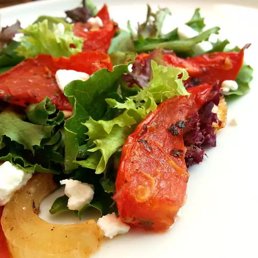

Roasted_Tomato_Salad

This is how your Roasted Tomato Salad will look if you follow all the steps to the letter
Start any special meal with this warm salad.
Ingredients
- 3 tomatoes, cut into wedges
- 1 onion, thinly sliced
- 3 cloves garlic, minced
- 3 tablespoons very thinly sliced fresh basil leaves
- ½ teaspoon dried oregano
- ½ teaspoon dried marjoram
- kosher salt and ground black pepper to taste
- 3 tablespoons extra-virgin olive oil
- 1 tablespoon balsamic vinegar
- 1 head Boston lettuce, leaves separated
- 4 romaine lettuce leaves, thinly sliced
- 3 ounces freshly shaved Parmesan cheese
Steps
- Preheat oven to 350 degrees F (175 degrees C).
- Mix tomatoes, onion, garlic, basil leaves, oregano, and marjoram in an 8x8-inch baking dish; sprinkle with kosher salt and black pepper. Drizzle with olive oil and balsamic vinegar and toss ingredients to combine.
- Roast in the preheated oven until the tomatoes and onion are soft and the juices turn brown and sticky, 20 to 30 minutes. Set aside to cool while you complete the remaining steps.
- Place a Boston lettuce leaf onto 6 serving plates and sprinkle shredded romaine lettuce over each leaf. Divide the warm roasted tomato mixture among each salad; top salads with shaved Parmesan cheese. If any caramelized tomato juices remain in the pan, spoon over the salads.